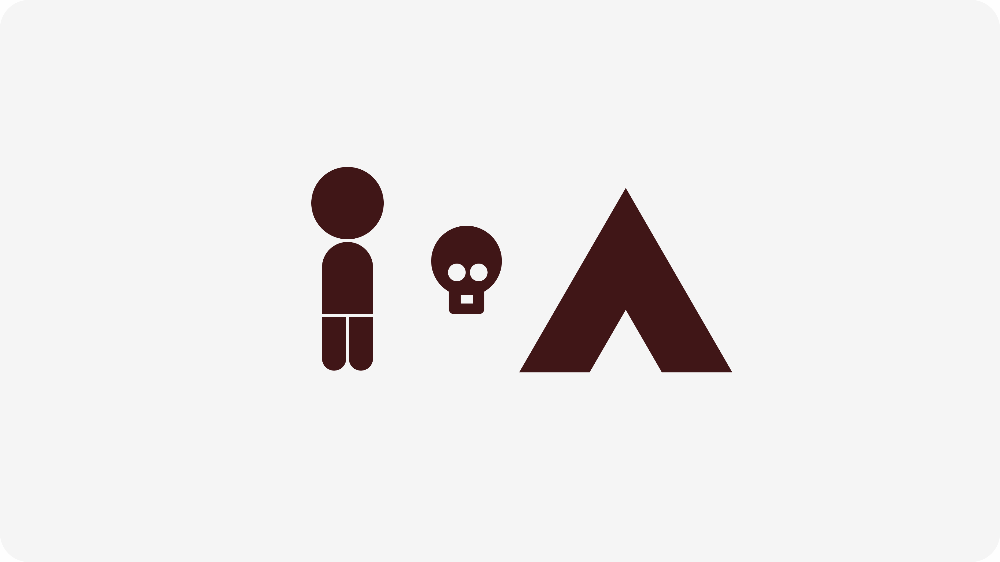
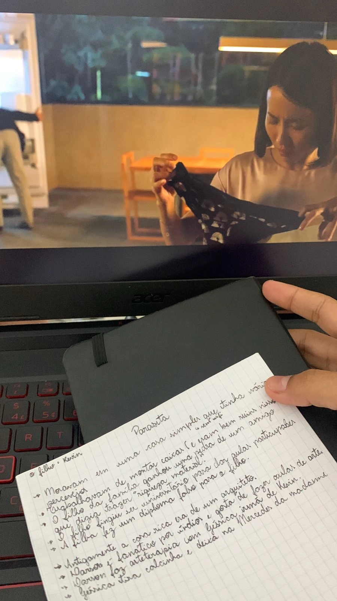
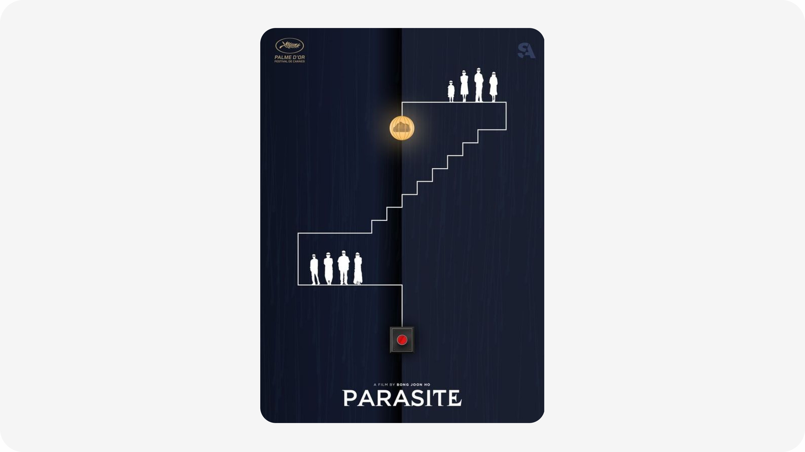
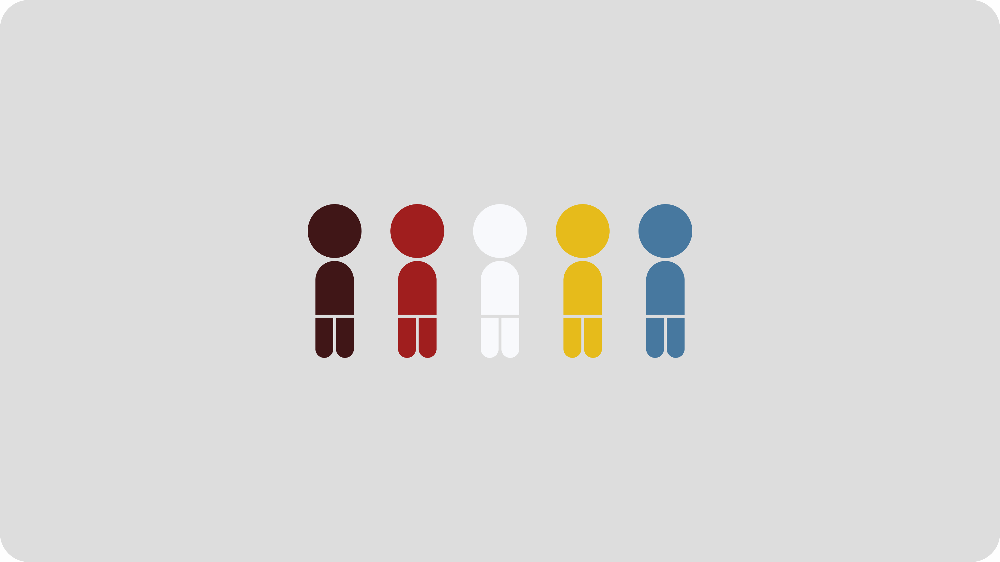
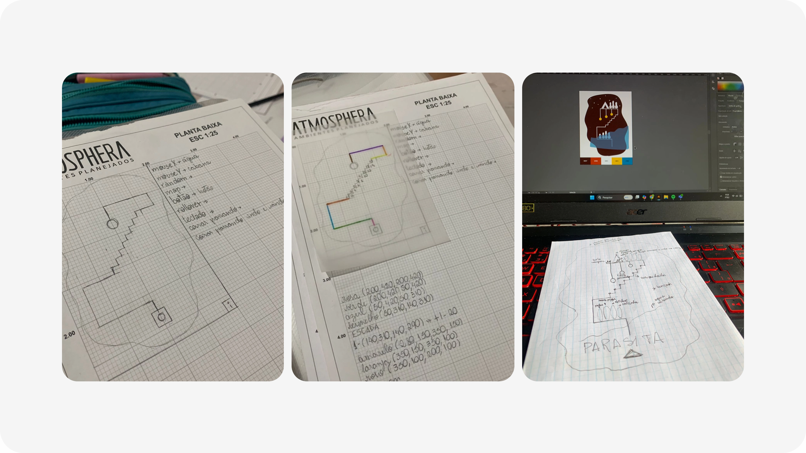
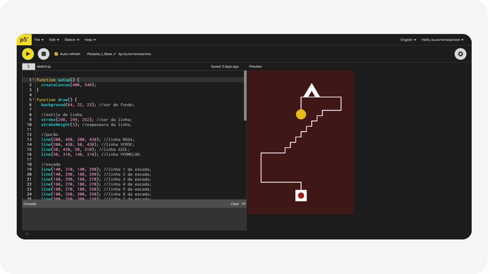
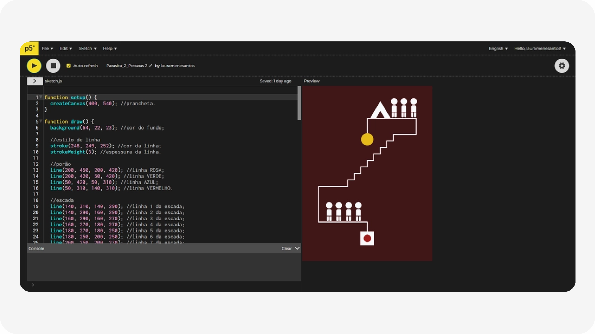
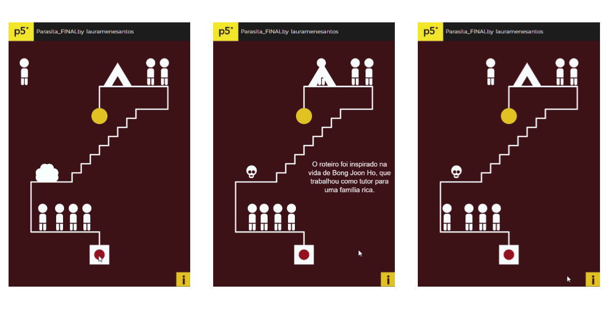
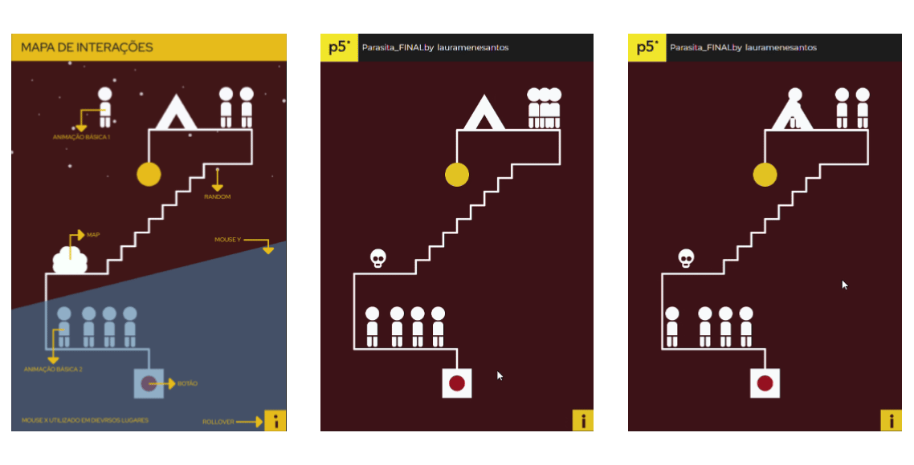
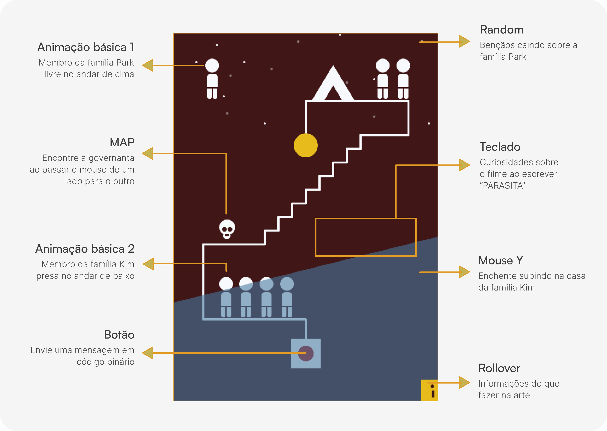

Nem tudo o que desenhamos
pode ser programado.
Programação criativa construída inteiramente em código com P5.js para compreender como decisões de design se traduzem em código. O projeto investiga as possibilidades e limitações técnicas a partir da abstração interativa de um pôster do filme Parasita.

Designers e desenvolvedores trabalham juntos constantemente, mas a comunicação entre as áreas pode falhar quando cada lado desconhece as limitações e prioridades do outro. Este projeto surgiu dessa questão: como a forma de pensar Design muda quando se entende o básico de programação? Para explorar isso na prática, foi feito uma programação criativa em p5.js, a partir da abstração de um pôster.
Projeto
Pôster interativa do filme Parasita
Objetivo
Compreender como o design se traduz em código
Abordagem
Programação criativa com P5.js
Situação
Projeto experimental de exploração técnica
“Parasita” é um filme sul-coreano vencedor de diversos prêmios do Oscar, lançado em 2019 e dirigido
por Bong Joon-ho. A obra narra a história de duas famílias, os Kim, que vivem na pobreza, e os Park,
que desfrutam de uma vida luxuos, combinando com maestria suspense, drama e comédia.
Entendendo a obra
O filme foi assistido com atenção, anotando os elementos narrativos mais marcantes para que as interações fizessem sentido com a obra.

ANOTAÇÕES:
- Moravam em uma casa simples que tinha vários percevejos;
- Trabalhavam de montar caixas de pizza (e eram bem ruins nisso);
- Kevin da família ganhou uma pedra de um amigo que dizia trazer "riqueza material";
- Kevin fingiu ser universitário para dar aulas particulares;
- Géssica é boa em arte de fez um diploma falso para o irmão;
- Antigamente a casa rica era de um arquiteto;
- Darson é fanático por índios e gosta de fazer aulas de arte;
- Kevin indica Géssica para dar arteterapia para Darson;
- Géssica tira calcinha e deixa no carro da madame;
- O Sr. Kim passa pêssego na governanta que tem alergia;
- O marido da governanta conversa por ela por código binário, pelas lâmpadas da casa.
...
Pôster de referência
Após analisar o filme, foram pesquisados pôsteres que representassem sua essência por meio de formas simples. O autor do pôster escolhido não foi identificado.

Paleta de cores
As cores não foram escolhidas por preferência estética, foram escolhidas porque já estavam no pôster e porque traduzem a tensão e a frieza que o filme transmite.

Antes de iniciar o desenvolvimento, foram definidas algumas restrições para garantir que o projeto realmente explorasse o aprendizado de programação criativa e mantivesse conexão com a narrativa do filme.
Restrição 1 - Sem imagens
Nenhuma imagem poderia ser importada. Tudo precisava ser desenhado em código para que o aprendizado técnico fosse real.
Restrição 2 - Sentido narrativo
As interações precisavam fazer sentido narrativo, não podiam ser apenas eram efeitos visuais, deviam ser referências ao filme.
Restrição 3 - Simplificação
O que não podia ser implementado dentro das limitações técnicas precisava ser simplificado.
Restrição 4 - Sem uso de IA
A IA não podia ser usada para gerar código pronto. Sendo utilizada apenas como ferramenta de aprendizado, quando surgiam dúvidas ela explicava o raciocínio.
O processo foi incrementa, cada etapa adicionava um elemento ao código, testava e ajustava antes de seguir. A base do pôster foi mapeada com linhas coloridas para facilitar a identificação de cada elemento no código.
ETAPA 1 - Mapeando no papel
A base do pôster foi mapeada à mão antes de qualquer linha de código. Cada elemento recebeu uma cor diferente para facilitar a identificação no editor. As cores foram usadas como referência nos comentários do código, tornando o processo de localização de cada parte mais direto.

Aprendizado técnico: Comentários no código facilitam a navegação. Nomear cada linha colorida no papel e replicar esses nomes nos comentários do código criou um mapa legível do que estava sendo construído.
Aprendizado de processo: Ir para o papel antes de abrir o editor é uma decisão de design, não de programação. O sistema de coordenadas do P5.js trabalha com posições numéricas. Saber onde cada elemento está no espaço antes de codar elimina boa parte do processo de tentativa e erro.
ETAPA 2 - Código base
Estrutura inicial do canvas, proporções e fundo. Definição do sistema de coordenadas que serviria de referência para tudo que viria depois.

Aprendizado técnico: Como o P5.js organiza o canvas com os eixos x e y, e como as funções setup() e draw() estruturam o ciclo de renderização.
Aprendizado de processo: Definir as proporções e o sistema de coordenadas antes evita reposicionamento em cascata depois. As posições já estavam pensadas, o código base foi escrito com referências claras, sem tentativa e erro de posicionamento.
ETAPA 3 - Base com pessoas
A ideia inicial era representar os personagens como manchas abstratas, formas orgânicas que sugerissem figuras humanas sem defini-las. Na prática, formas orgânicas em P5.js exigem curvas de Bézier e vértices manuais, o que tornava a implementação complexa demais para o momento do projeto. A decisão foi usar formas geométricas simples: círculos, retângulos e linhas.

Aprendizado técnico: Uso das funções ellipse(), rect() e line() para construir formas compostas, como combinar primitivos simples para representar figuras complexas.
Aprendizado de processo: A restrição técnica melhorou a decisão de design. Formas geométricas simples são mais fiéis ao estilo do pôster do que manchas orgânicas seriam, o que parecia uma limitação virou coerência visual.
ETAPA 4 - Funcionamento do botão e lâmpada
Primeira interação implementada. O botão aciona a lâmpada, referência direta à cena do filme onde mensagens são enviadas em código binário pela luz piscando.

Aprendizado técnico: Uso de variáveis para controlar propriedades visuais, como cor e tamanho, permitindo alterar a aparência dos elementos de forma dinâmica durante a execução do programa.
Aprendizado de processo: Interatividade no código exige pensar em estados: antes do clique, depois do clique e durante o clique. No design, isso já existe nos estados de componente, saber nomear e estruturar estados no código torna o handoff mais preciso.
ETAPA 5 - Água subindo e benções caindo
A enchente que alaga a casa dos Kim enquanto os Park veem a chuva como bênção. Dois elementos simultâneos que reagem de formas opostas à mesma condição.

Aprendizado técnico: Uso da posição do mouse para controlar elementos em tempo real e aplicação da função random() para criar variações de opacidade, gerando um efeito visual dinâmico.
Aprendizado de processo: Pequenas alterações em variáveis como posição, transparência e interação podem transformar elementos estáticos em experiências mais vivas e responsivas.
ETAPA 6 - Caveira e arbusto
O mouse divide a tela ao meio. Na metade direita, um arbusto comum. Na metade esquerda, uma caveira aparece. Referência à governanta que foi enterrada no jardim e que só alguns personagens sabem do fato.
Aprendizado técnico: Uso de mouseX para criar condicionais de exibição. Como mostrar ou ocultar elementos com base na posição do cursor.
Aprendizado de processo: Interações baseadas em posição do mouse criam camadas de descoberta. O usuário encontra algo sem ser instruído a procurar. É design de revelação progressiva aplicado ao código.
ETAPA 7 - Pessosas andando
Dois movimentos que contam histórias diferentes. A pessoa no porão oscila no mesmo ponto, indo e voltando sem realmente avançar, representando uma trajetória marcada por limitações e repetição. Já a pessoa no andar superior percorre livremente todo o eixo x, sugerindo maior liberdade de escolha e circulação. A mesma técnica de animação, mas com leituras visuais completamente distintas.
Aprendizado técnico: Uso de variáveis de posição e velocidade para criar movimentos distintos, um personagem se desloca continuamente pelo canvas, enquanto o outro se movimenta entre limites definidos por meio da inversão da velocidade.
Aprendizado de processo: Diferentes comportamentos visuais podem ser construídos com regras simples de programação, conectando código e narrativa em uma mesma solução.
ETAPA 8 - Curiosidades
Ao digitar a palavra "PARASITA" no teclado, curiosidades sobre o filme aparecem na tela. A funcionalidade exigiu entender como detectar de teclas no P5.js. A IA foi usada como professora: a dúvida foi descrita, a IA ensinou o raciocínio para que o código pudesse ser escrito.
Aprendizado técnico: Captura de input de teclado com keyTyped(). Como concatenar strings a cada tecla pressionada e comparar com a palavra-alvo para disparar a ação.
Aprendizado de processo: Usar IA para aprender a lógica é diferente de usar IA para gerar uma solução. Entender o raciocínio antes de escrever o código faz diferença no que você absorve e no que consegue adaptar depois.
ETAPA 9 - Ícones e informações
Com várias interações distribuídas pela obra, surgiu uma questão de UX: sem contexto, o usuário poderia não descobrir o que é interativo. A solução foi adicionar um ícone "i" no canto da tela, que revela um guia com as interações disponíveis, suas funções e referências ao filme.
Aprendizado técnico: uso de textWidth() para medir o tamanho de uma string e calcular a posição x correta para centralização manual. No P5.js não existe "centralizar" automático como em CSS, cada posição é um cálculo.
Aprendizado de processo: O que é trivial no design pode ser trabalhoso no código. Centralizar um texto no Figma leva um segundo. No P5.js exige entender como o texto é renderizado e calcular sua posição manualmente. Isso muda como você especifica alinhamentos para desenvolvimento.
À primeira vista, os elementos do pôster parecem semelhantes. Com a interação, novas camadas da narrativa são reveladas, com personagens, eventos e detalhes ocultos surgindo na composição. Cada interação reforça temas e símbolos de Parasita, transformando o código em uma experiência explorável.

Design e código tem limites diferentes
Animações e interações que parecem simples no Figma podem ser complexas no código, saber isso torna as conversas com desenvolvimento mais precisas e as decisões de design mais realistas.
Estados e componentes existem no código
O que no design é nomenclatura de componente, no código é uma variável booleana e uma condicional. Entender essa equivalência muda como você documenta e especifica interações.
Animação é matemática
Velocidade, aceleração, limite, oscilação. Cada efeito visual corresponde a uma operação numérica. Saber disso torna as especificações de motion mais concretas e menos subjetivas.
Simplificar é uma decisão, não uma derrota
Algumas restrições técnicas forçaram escolhas de design mais simples que melhorou o produto final.
Obrigada por ler até aqui :)